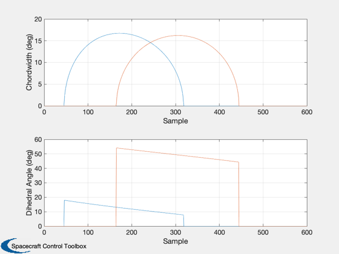
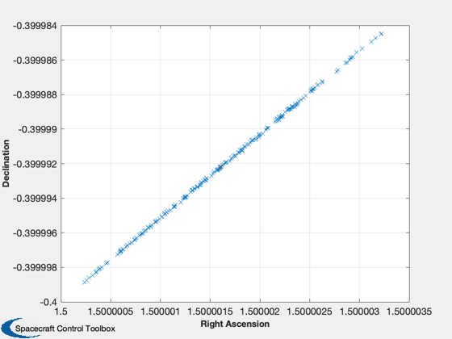
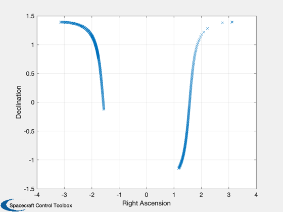
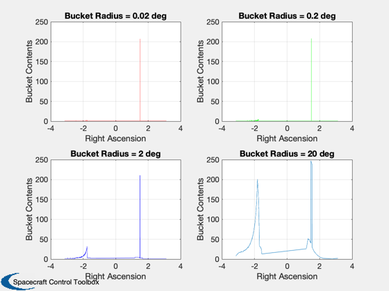
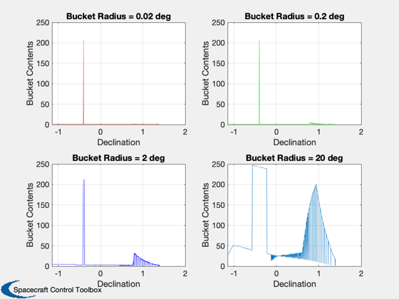

Test attitude determination using closed form methods
------------------------------------------------------------------------
See also SFShustr, BShuster, ConeInt, Delay, Quant, RaDec2U, ADGen
------------------------------------------------------------------------
Contents
nsamples = 600;
degToRad = pi/180;
radToDeg = 180/pi;
rPMToRPS = 2*pi/60;
cant1 = 94*degToRad;
cant2 = 86*degToRad;
dihedral1 = 0*degToRad;
dihedral2 = 45*degToRad;
ssbias = 0.0;
ssnoise = 0.0*degToRad;
ssquant = 0.000001*degToRad;
erbias = 0.0;
cw1bias = 0.01;
cw2bias = 0.0;
da1bias = 0.0;
da2bias = 0.0;
cant1bias = 0.0;
cant2bias = 0.0;
c10 = cos(10*degToRad);
s10 = sin(10*degToRad);
sun = [c10;0;s10];
usun = [ c10*ones(1,nsamples);zeros(1,nsamples);s10*ones(1,nsamples)];
qtype = 'round';
onesigma = 0.0;
sunbias = 0.0;
spinrate = 10*rPMToRPS;
quant = 1.e-6;
delay = 0;
The orbital elements
el(1) = (42167 + 6800)/2;
el(2) = 7 * pi/180;
el(3) = 0;
el(4) = 0;
el(5) = 0.7;
ra = 1.5;
dec = -0.4;
uspin = RaDec2U(ra,dec);
cantAngle = [cant1;cant2];
cantBias = [cant1bias;cant2bias];
dihedralBias = [dihedral1;dihedral2];
mA = linspace(pi/2,3*pi/2,nsamples);
[tLE,tTE,sa,unadir,eradius] = ADGen( el, usun, uspin, spinrate, mA, [delay;delay],...
[quant;quant], [qtype;qtype], [onesigma;onesigma],...
cantAngle, cantBias, dihedralBias, ssquant,...
'round', ssnoise, ssbias, erbias );
tte1 = tTE(1,:);
tte2 = tTE(2,:);
tle1 = tLE(1,:);
tle2 = tLE(2,:);

Single frame Shuster method
[rAE,decE] = SFShustr( usun, unadir, sa, tle1, tte1, cant1, eradius, spinrate, 6*degToRad, dihedral1 );
fprintf('Single Frame Schuster: Right ascension error = %12.4f deg\n',(ra - rAE)*radToDeg)
fprintf(' Declination error = %12.4f deg\n',(dec-decE)*radToDeg)
Single Frame Schuster: Right ascension error = -0.0001 deg
Declination error = -0.0004 deg

Single frame Shuster method
sigmaS = 0.0001*degToRad;
sigmaE = 0.0001*degToRad;
sigmaN = 0.0001*degToRad;
[rAE,decE] = BShuster( usun, unadir, sa, tle1, tte1, cant1, eradius, spinrate,...
6*degToRad, dihedral1, sigmaS, sigmaE, sigmaN );
fprintf('Batch Schuster: Right ascension error = %12.4f deg\n',(ra - rAE)*radToDeg)
fprintf(' Declination error = %12.4f deg\n',(dec - decE)*radToDeg)
Batch Schuster: Right ascension error = -0.0001 deg
Declination error = -0.0004 deg
Cone Intercept Method
[ra,dec,rd] = ConeInt( usun, unadir, sa, tle1, tte1, cant1, eradius, spinrate, 6*degToRad );
fprintf('Cone Intercept: Right ascension error = %12.4f deg\n',(ra - rAE)*radToDeg)
fprintf(' Declination error = %12.4f deg\n',(dec - decE)*radToDeg)
Cone Intercept: Right ascension error = -0.0005 deg
Declination error = -0.0024 deg
  